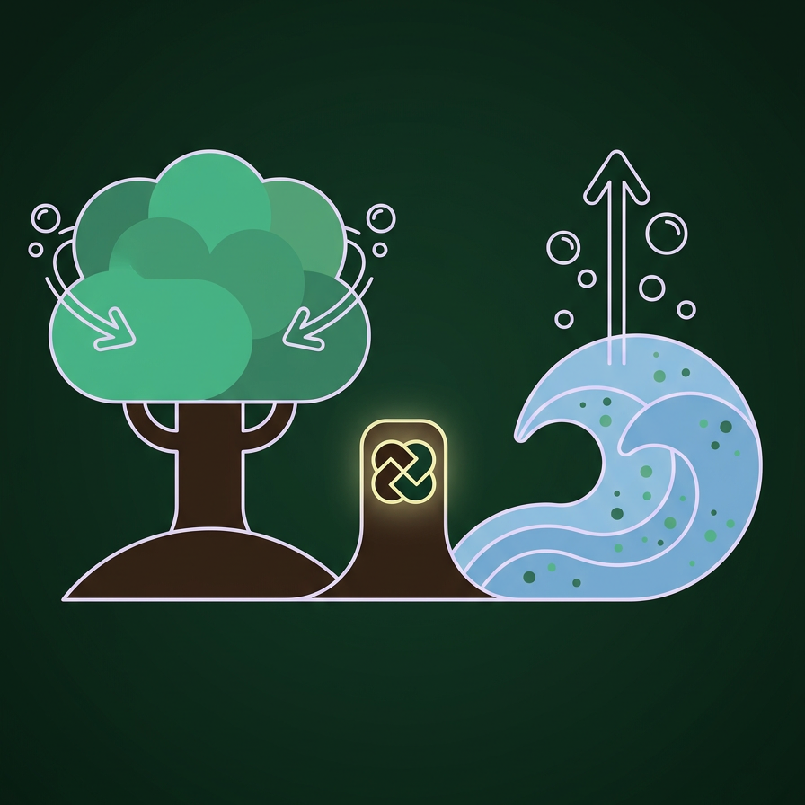
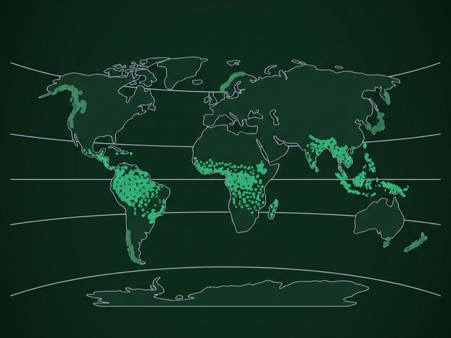
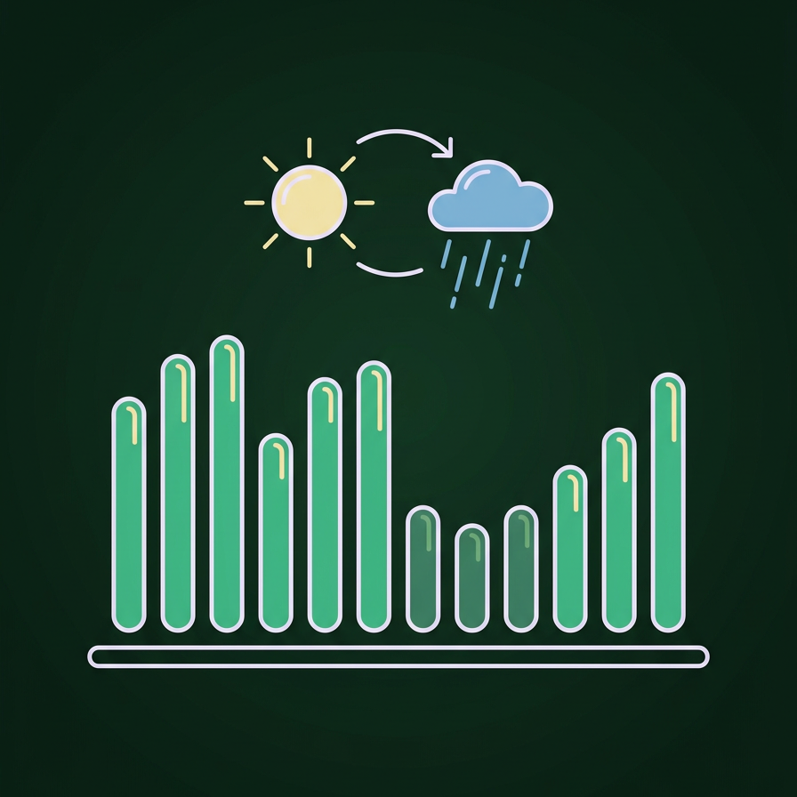
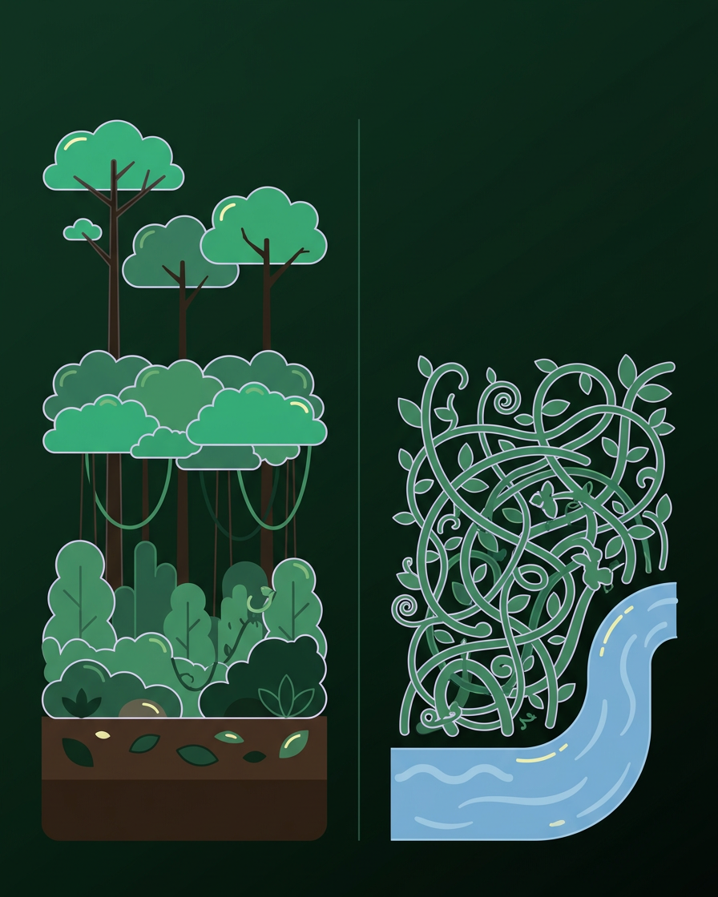

Tippek a tévhitek ellen
Az esőerdő tényleg a Föld tüdeje? A tévhit és a valóság
A tévhit: Az Amazonas és más esőerdők termelik a levegő oxigénjének jelentős részét
A valóság: Az esőerdők fái sok oxigént állítanak elő, de a növények, állatok és lebontó szervezetek légzése ugyanennyit fel is használ. A nettó oxigéntermelés így közel nulla. A becslések szerint az óceáni fotoszintetizáló élőlények adják a termelés nagyjából felét. Az esőerdők fontossága máshol van: hatalmas mennyiségű szenet tárolnak, párologtatásukkal alakítják a csapadékot, és szabályozzák a helyi és regionális éghajlatot. Egy kivágott vagy leégett esőerdő ezért nem az oxigénszintet rendíti meg, hanem a szén- és vízkörforgást.

Léteznek mérsékelt övi esőerdők? Igen, és itt vannak
A tévhit: Esőerdő csak az Egyenlítő környékén létezik.
A valóság: A trópusi esőerdők a legismertebbek, de léteznek mérsékelt övi esőerdők is. Ilyenek találhatók Észak-Amerika csendes-óceáni partvidékén, Chile déli részén, Tasmaniában, Új-Zélandon, Japánban és Norvégia, valamint a Brit-szigetek egyes part menti részein. Közös bennük a bőséges csapadék és a párás, hűvösebb éghajlat. Ezek az erdők gyakran rendkívül sok szenet tárolnak, és a világ legnagyobb fái közé tartoznak, de kiterjedésük jóval kisebb, mint a trópusiaké.

Mindig esik az esőerdőben? Az esőerdők éghajlata
A tévhit: Az esőerdőben állandóan zuhog az eső.
A valóság: A trópusi esőerdők évi csapadéka általában több ezer milliméter, de ez nem jelent folyamatos esőt. Sok esőerdőben jellegzetes napi ritmus van: napos reggel, délutáni zápor. Számos térségben pedig száraz évszak is van, amikor jóval kevesebb csapadék hullik. A magas páratartalom miatt viszont a levegő egész évben nedves, és a hőmérséklet is kevéssé ingadozik. Ez a stabil, meleg és nedves környezet teszi lehetővé a hatalmas fajgazdagságot.

Esőerdő vagy dzsungel? Mi a különbség?
A tévhit: Az esőerdő és a dzsungel ugyanazt jelenti.
A valóság: Az esőerdő éghajlati és szerkezeti fogalom: sok csapadék, magas páratartalom, többszintes növényzet. A „dzsungel" a hindi dzsangal szóból ered, és sűrű, szövevényes növényzetet jelent, amely lehet esőerdő széle, folyópart, de akár egy felhagyott terület is. Az esőerdő belseje sokszor kevésbé sűrű alul, mint hinnénk, a dzsungelszerű, áthatolhatatlan növényzet pedig ott alakul ki, ahol elég fény jut a talajra.

Tippek & Gyakori kérdések
Melyik a legfontosabb prioritás az esőerdőben, amikor leszakad az ég?
A menedéképítés az első és legégetőbb feladat. Az esőerdőkben a hirtelen lezúduló, heves esőzések perceken belül átáztatják a ruházatodat, a trópusi éjszakák pedig meglepően hűvösek lehetnek. A tartós nedvesség és a szél gyorsan hipotermiához (kihűléshez) vezet, ezért még a sötétedés vagy az eső előtt építs egy száraz, talajszinttől megemelt fekhelyet és egy sűrű levelekkel fedett tetőt.
Hogyan juthatsz biztonságos ivóvízhez a fertőzések elkerülésével?
Ne igyál közvetlenül állóvízből, pocsolyákból vagy lassú folyású patakokból, mert tele vannak parazitákkal és baktériumokkal. A legbiztonságosabb forrás a friss esővíz, amelyet nagy levelekkel gyűjthetsz össze. Emellett jó megoldás a nedvdús növények keresése: vágj át egy vastagabb ivóliánt (vízliánt) felül, majd alul – a szagtalanná és tisztává tisztult víz közvetlenül a szádba vagy a kulacsodba csöpög.
Hol és hogyan érdemes felállítani a tábort a biztonságod érdekében?
A táborhelyet mindig magaslati, száraz és jól szellőző területen alakítsd ki. Kerüld a kiszáradt medreket és a folyópartok közvetlen közelét, mert egy távoli felhőszakadás pillanatok alatt villámáradást okozhat. Mindig nézz fel a magasba is: ne verj tábort korhadt fák vagy nehéz, elhalt ágak alatt, mert azok bármikor lezuhanhatnak.
Mit tehetsz a csípések, bögölyök és a vérszívók ellen vegyszerek nélkül?
A rovarok nemcsak kellemetlenek, de súlyos betegségeket (például maláriát vagy dengue-lázat) is terjeszthetnek. Viselj szellős, de hosszú ujjú felsőt és hosszú nadrágot. Ha nincs nálad rovarriasztó, dörzsöld be a kitett bőrfelületeket nedves agyaggal vagy hűvös fahamuval – ez egy fizikai védőréteget képez a bőrödön, amit a szúnyogok és legyek nem tudnak átfúrni
Hogyan gyújts tüzet egy teljesen átázott, nedves környezetben?
A nedves esőerdőben a tűzgyújtás türelmet igényel. Keress elhalt, de még lábon álló bambuszt vagy döglött fák belső, száraz kéregrészét, és készíts belőle finom forgácsot. Sose építs tüzet közvetlenül a vizes talajra: készíts vastagabb ágakból egy kis emelvényt (alapot), és azon gyújts lángot, hogy a talajból felszálló nedvesség ne oltsa el a kezdő tüzet.
Ehetsz-e a vadonban talált ismeretlen bogyókból, gombákból vagy gyümölcsökből?
Szigorúan tilos ismeretlen növényeket és gombákat fogyasztani, mert az esőerdő tele van erősen mérgező fajokkal, amelyek súlyos gyomorfertőzést vagy bénulást okozhatnak. Csak olyan gyümölcsöt egyél, amit 100%-os biztonsággal felismersz. Ha nagyon éhes vagy, inkább a jól ismert, biztonságos növényi részeket (például pálmaszívet) vagy alaposan átsütött, megfőzött rovarokat válaszd.
Hogyan kerüld el a veszélyes, rejtőzködő állatokat haladás közben?
A legtöbb kígyó és skorpió nem támad ok nélkül, csak ha meglepik vagy rálépnek. Haladás közben tarts a kezedben egy hosszú botot, és azzal üsd magad előtt a sűrű aljnövényzetet és a talajt. A bot keltette rezgések és zajok figyelmeztetik a rejtőzködő élőlényeket, így azoknak lesz idejük elmenekülni, mielőtt túl közel érkeznél hozzájuk.
Mi a leghelyesebb teendő, ha végképp eltévedtél a sűrűben?
A legfontosabb a pánik elkerülése. Ha nincs határozott irányod, ne bolyongj céltalanul a sűrűben, mert csak energiát pazarolsz. Keress egy kis patakot, és kövesd azt a folyásirányba: a kis patakok nagyobb folyókba torkollanak, a folyók mentén pedig sokkal nagyobb eséllyel találsz emberi településeket, utakat vagy halászokat.
Miért kell kiemelten figyelned a lábfejed és a bőröd állapotára?
A trópusi melegben és a folyamatos nyirkosságban a bőr gyorsan felázik, ami úgynevezett "lövészárok-lábhoz", súlyos gombás fertőzésekhez és elfertőződő sebekhez vezet. Minden pihenőnél vedd le a bakancsodat és a zoknidat, töröld teljesen szárazra a lábadat, és hagyd a bőrödt levegőzni. Az apró vágásokat és karcolásokat azonnal tisztítsd meg, mert a trópusi klímán a legkisebb seb is gyorsan elfertőződhet.